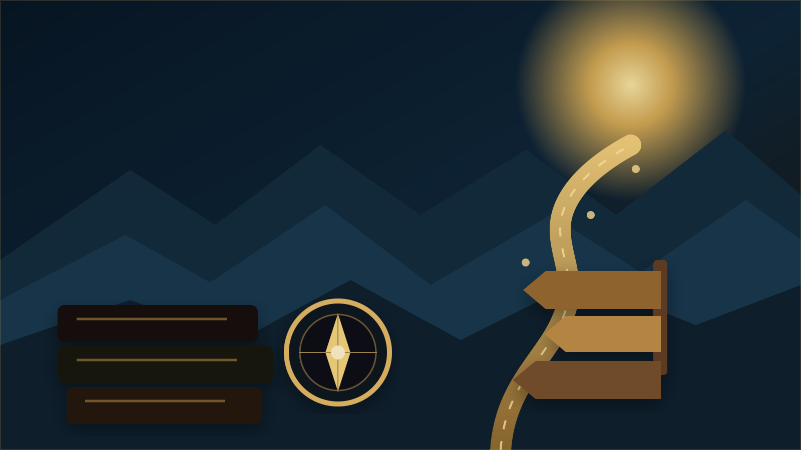

چرا برنامه قبلی کار نکرد؟
ممکن است اهداف بیش از ظرفیت، مطالعه بدون بازیابی، یا تحلیلنکردن اشتباهها در نتیجه نقش داشته باشند؛ برای هر فرضیه باید شاهد پیدا کرد.
مشاوره کنکور و برنامهریزی آموزشی
کنکور را باید مدیریت کرد؛ نه اینکه تمام هویت دانشآموز را به آن سپرد.
برنامه خوب، برنامهای نیست که روی کاغذ بیشترین ساعت را داشته باشد. برنامه زمانی مفید است که قابل اجرا، قابل سنجش و قابل اصلاح باشد و دانشآموز بتواند در طول مسیر از دادههای واقعی عملکرد خود یاد بگیرد.

سطح درسی، الگوی مطالعه، زمان واقعی در دسترس و فاصله تا هدف.
طراحی برنامهای که با مدرسه، زندگی و ظرفیت واقعی فرد سازگار باشد.
بررسی اجرای برنامه، کیفیت مطالعه و شناسایی علت عقبماندگی یا افت.
کمکردن پراکندگی و انتخاب منابع بر اساس نیاز، نه تبلیغ و اضطراب.
تشخیص تفاوت میان فشار طبیعی تلاش و فشاری که عملکرد را مختل میکند.
وقتی دادهها نشان میدهند برنامه کار نمیکند، اصلاح برنامه بخشی از فرایند است.
رتبه و نتیجه نهایی تحت تأثیر مجموعهای از عواملاند و هیچ مشاور مسئولی نمیتواند نتیجهای را تضمین کند. تعهد حرفهای ما به کیفیت تحلیل، برنامهریزی، پیگیری و تصمیم است؛ نه فروش اطمینان کاذب.
تصمیمهای بعد از آزمون، بهویژه انتخاب رشته، به همان اندازه مهماند. به همین دلیل، مشاوره کنکور از انتخاب رشته و شناخت فرد جدا طراحی نمیشود.
مرکز دانش
زمینه علمی و تفسیر تربیتی
مشاوره کنکور اگر صرفاً به تعیین ساعت مطالعه محدود شود، بخش مهمی از فرایند یادگیری نادیده میماند. پاسخ نادرست ممکن است از فهم ناقص، بازیابی ناموفق، خطای توجه یا شرایط آزمون ناشی شود و هرکدام به اقدامی متفاوت نیاز داشته باشند. تنها با مشاهده دقیق تکلیف و روش مطالعه میتوان درباره اصلاح برنامه بهصورت مسئولانه گفتوگو کرد؛ ازاینرو، نباید نتیجه یک آزمون آزمایشی به داوری کلی درباره توانایی فرد تبدیل شود.
روش مطالعه بهار در کتاب «کشف مسیر طلایی استعداد» بازیابی، کشف شکاف، ترمیم و تثبیت را به هم متصل میکند. این رویکرد به دانشآموز کمک میکند میان احساس آشنایی با مطلب و توان بازآوری آن تمایز بگذارد و بر اساس شاهد یادگیری برنامه را اصلاح کند. کنکور بخشی مهم از تصمیم آموزشی است، اما ارزش انسان یا امکان رشد او در نتیجه آن خلاصه نمیشود.
برای توضیح روششناختی این نگاه، Golden Talent و حدود استفاده از شواهد در دسترساند.
برای داوطلب کنکور
در برنامهریزی کنکور، افزایش ساعت مطالعه بدون شناخت نوع خطا لزوماً پیشرفت نمیآورد. بهتر است به جای نسخه ثابت، شواهدی از بازیابی مطالب، تمرین، مدیریت زمان، وضعیت پایه درسی و محدودیتهای روزمره گردآوری شوند تا تصمیم بعدی قابل بازبینی باشد.
ممکن است اهداف بیش از ظرفیت، مطالعه بدون بازیابی، یا تحلیلنکردن اشتباهها در نتیجه نقش داشته باشند؛ برای هر فرضیه باید شاهد پیدا کرد.
کارنامه و پاسخها ابزار تشخیص موضوعات نیازمند بررسیاند، نه حکم قطعی درباره استعداد، ارزش یا رتبه نهایی داوطلب.
یک هفته از زمان واقعی مطالعه و دو یا سه نمونه خطای پرتکرار را ثبت کنید؛ با این دادهها میتوان مسئله را دقیقتر مطرح کرد.
برای خواندن راهنماهای عمومی، ثبتنام یا پرداخت لازم نیست. ارسال پیشنویس ایمیل به معنای ثبت درخواست نیست؛ رزرو و پرداخت فقط پس از بررسی شرایط و تأیید مراحل مربوط معتبرند.
برای مسئله مشخص مانند تحلیل عملکرد آزمون یا عقبماندگی از برنامه، جلسه تخصصی میتواند نقطه شروع باشد. اگر مسئله در طول زمان تغییر میکند، برنامه یکماهه را بررسی کنید. پیش از درخواست، زمان واقعی مطالعه، خطاهای پرتکرار و محدودیتهای مدرسه را ثبت کنید. هیچ رتبه یا قبولی تضمین نمیشود.